Subsections
4. Designing Algorithms with FrEAK
As mentioned in Chapter 1.2: section1.2, FrEAK
visualizes the control flow of evolutionary algorithms as operator
graphs.
This chapter explains the main concepts of FrEAK's operator graphs
(Section 4.1: sec:op-graph-concept)
and describes how to work with the graphical editor for these operator
graphs (Sections 4.2: sec:graph-editor
and 4.3: sec:param-control).
4.1 Operator Graphs: Concepts
This section explains the main concepts of FrEAK's operator
graphs. If you are impatient, you can skip this section and return to
it if you are confused by anything in the following sections of this
chapter.
An operator graph visualizes how a given
generation becomes the next generation. Operator graphs consist of
nodes and edges. Each node
defines an operator that works on some of the
individuals of the population. Nodes have ports
where edges can connect to (see Figure 4.1).
Edges define the flow of individuals.
Figure 4.1:
An Operators with Ports.
|
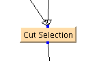 |
The edges are directed, that means each edge has a source and a target
port;
those working as source port are called inports,
those working as target port are called
outports.
Most kinds of operators have a fixed number of inports and outports.
But some kinds of operators, like some split operators, can have
any number of incoming or outgoing connections. In FrEAK, these
operators are said to have floating inports or floating outports, respectively.
For instructions how to work with nodes and edges in operator graphs,
please refer to Section 4.2.1,
sec:adding-remov-nodes.
Another important concept in FrEAK is that of
properties. Many operators can be configured to
some extent, a mutation operator for example may let you specify the
mutation probability. Each attribute of an operator that is
configurable is called a property. For instructions how to change
properties of operators, please refer to
Section 4.2.2, sec:module-property.
4.2 The Graph Editor
The graph editor is divided into three areas (see
Figure 4.2).
Figure 4.2:
The Graph Editor Dialog.
|
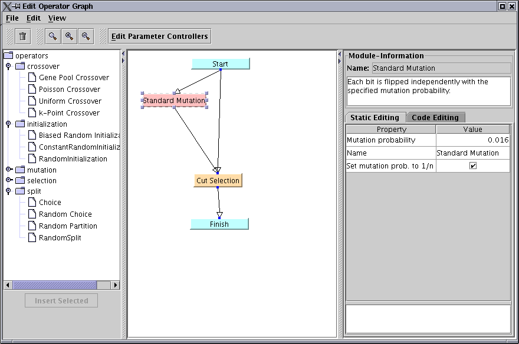 |
The editor itself is found in the middle. To the left, there is a
tree of operators that can be inserted into the graph, and to the
right, information about the currently selected module is displayed.
You can also edit properties of some of the operators here, see
Section 4.2.2.
The menu and the tool bar provide standard editor commands like
creating a new, empty operator graph, opening and saving operator
graphs as well as zooming the graph display.
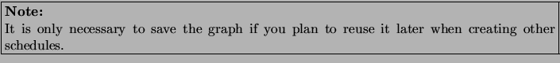
In addition to these commands, you can open the Parameter Controller
Setup with the appropriate tool bar button or by selecting Edit
Parameter Controllers from the Edit
menu. Section 4.3: sec:param-control
describes how to work with parameter controllers.
When you have finished creating the operator graph, close the editor
dialog by using the file menu's Close item. If your operator
graph contains syntax errors, you will see a warning message (see
Figure 4.3).
Figure 4.3:
Error Message: Graph has Syntax Errors.
|
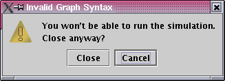 |
Selecting Close and
trying to run the resulting schedule will most likely produce
errors, so you should select Cancel and try to
correct the error. Make sure there are no operators that have
unconnected, non-floating inports and that the graph contains no
cycles.
If the graph doesn't have errors or you have selected Close on the warning message dialog, the editor dialog is closed
and you return to the schedule editor.
4.2.1 Adding and Removing Nodes and Edges
To add an operator to the graph, simply select
it from the operator tree. You can insert the operator by double
clicking or by using the Insert Selected button.
To connect two operators, select an outport of the source node. Hold and drag the mouse to an inport
of the target node and release the mouse to establish the connection.
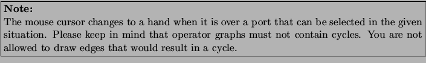
It is possible to connect multiple outports to one inport or one outport to multiple inports.
If multiple outports are connected to the same inport, all individuals reaching the inport are merged together before being processed by the operator. In case an outport is connected to multiple inports, the outgoing individuals are duplicated for all associated inports.
As explained in Section 4.1:
sec:op-graph-concept, some operators have a floating number
of inports or outports. The graph editor automatically inserts a new,
unconnected port whenever a floating port is connected, so you don't
have to take care about that. The graph editor also removes the
disconnected port when an edge is removed. In other words, operators
with floating ports always have an unconnected port.
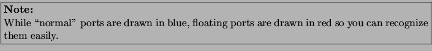
To remove an element of the graph, select it
with the mouse and press DEL or use the appropriate item from
the tool bar or the menu. You can also click and drag the mouse to
select multiple elements.
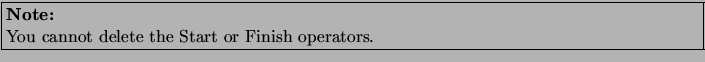
4.2.2 Changing Properties of Modules
To the right of the graph editor itself is the property inspector of
the operator that is currently selected in the operator graph (see
Figure 4.4).
Figure 4.4:
The Property Inspector
|
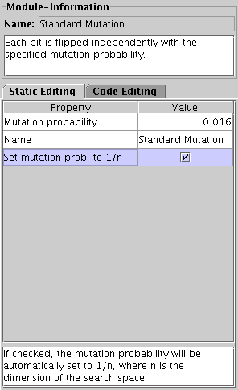 |
This inspector displays some information of the operator, such as its
name, its description, and the description of its ports.
Underneath the description of the ports, you can see and edit the
current values of the operator's properties. To edit a numeric or textual property, just doubleclick
into the appropriate cell in the table and type the new value. Confirm
your changes by pressing ENTER. Values that can only be either
true or false can be set by checking or unchecking
the checkbox.
At the bottom of the property inspector, the description of the
selected property is displayed.
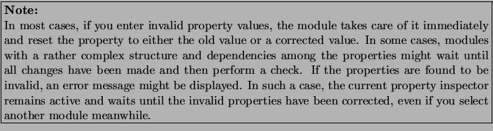
4.3 Using Parameter Controllers
The concept of parameter controllers has been added to FrEAK to
account for adaption. A parameter controller contains some attributes
which in this context are called parameters.
A parameter controller can listen for some events, and during the
handling of an event it can modify its parameters.
What is important is that the changes in the parameters are reflected
in properties of operators in the graph. To be more precise, an
operator and one of its properties can be assigned to a parameter.
When the value of a parameter changes, the associated property
is set to the same value.
You can open the parameter controller setup dialog from the graph editor
dialog with the appropriate tool bar button or by selecting
Edit Parameter Controllers from the Edit menu.
In the left part of this dialog, you can see the interface for adding and
removing parameter controllers (see
Figure 4.5).
You can add parameter controllers from the available list to the
active list (by double clicking on them or by selecting and clicking
the button between the two lists), and also select parameter
controllers from the latter list and remove them by clicking the
button labeled Remove.
Figure 4.5:
Adding parameter controllers.
|
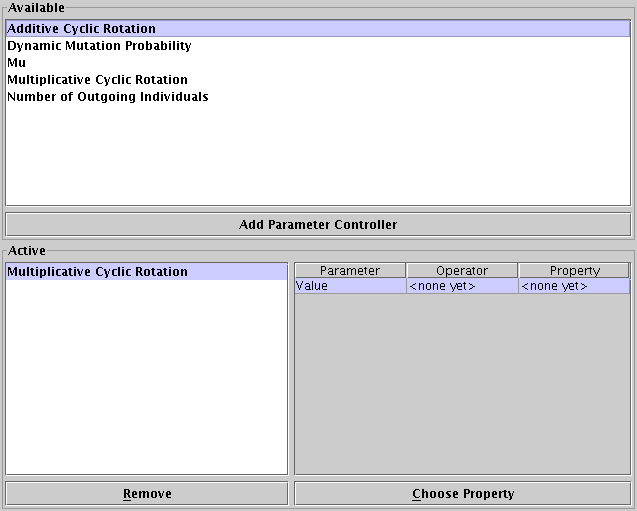 |
Once you have added a parameter controller, you can configure it. This
means mainly setting the sources for the events it can listen to and
assigning operators with their properties to the parameters. Furthermore,
the functionality of the parameter controller may be parametrized; in
this case, you can modify some properties.
If you click on a parameter controller in the active list, its
properties and events will be displayed in the module information
panel at the right of the parameter controller setup dialog (See
Figure 4.6). In the subpanel labeled
Events you find a table with one line for each event the
parameter controller can handle, containing the description or name of
the handled event and a drop down box which can be used for setting
the event source for the event.
Section 2.6.3:
ConfigurationOfEventSources describes in detail how to specify
event sources.
Above, you find the subpanel labeled Properties in which
another table containing the properties of the parameter controller is
located. Here you can set these properties and thus modify the
parameter controller's behaviour.
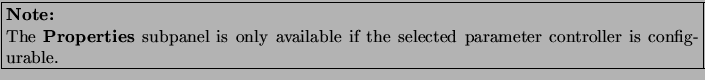
Figure 4.6:
The information panel for the selected parameter controller.
|
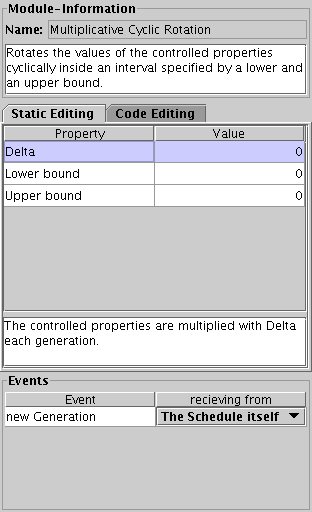 |
If a parameter controller is selected in the active list, a table
containing its parameters is displayed at the right of the parameter
controller main panel (see
Figure 4.7). To assign a property
to a parameter, you must select the parameter in the table and click
the button Choose Property.
Figure 4.7:
Setting up properties.
|
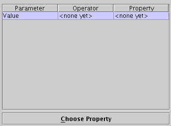 |
After doing this, you will see a window like the one in
Figure 4.8. There is a list of all operators in
the graph which contain properties compatible with the parameter you
have selected. You can open the list of properties for each operator by
clicking on the symbol left to an operator's name. After this, select the
property you want and click OK to make the selection take
effect.
Figure 4.8:
Selecting properties to control.
|
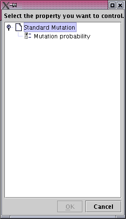 |